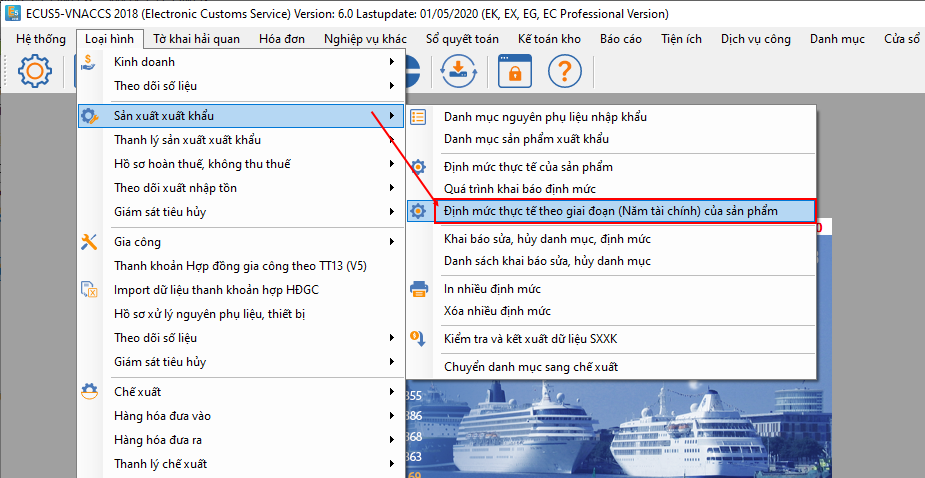
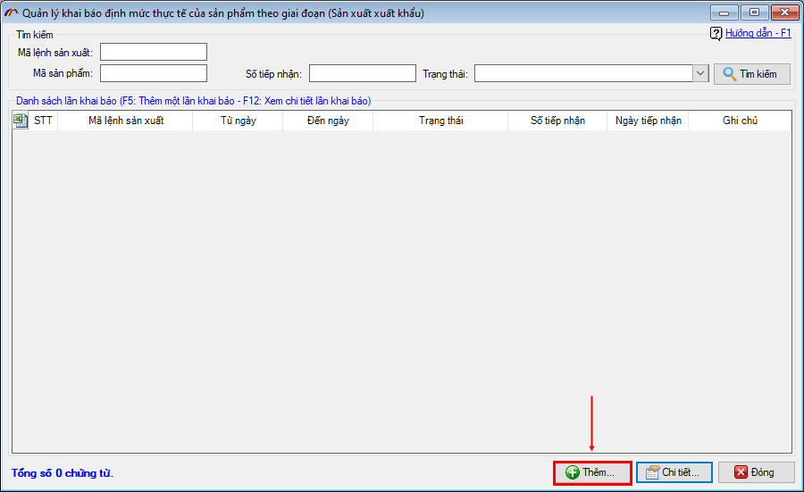
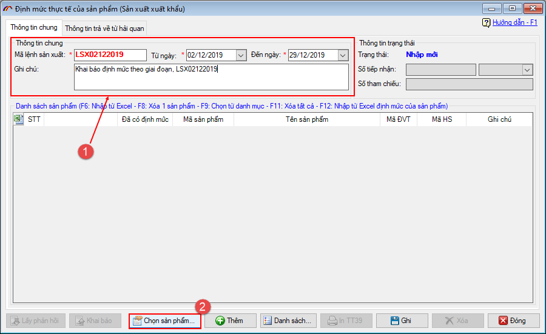
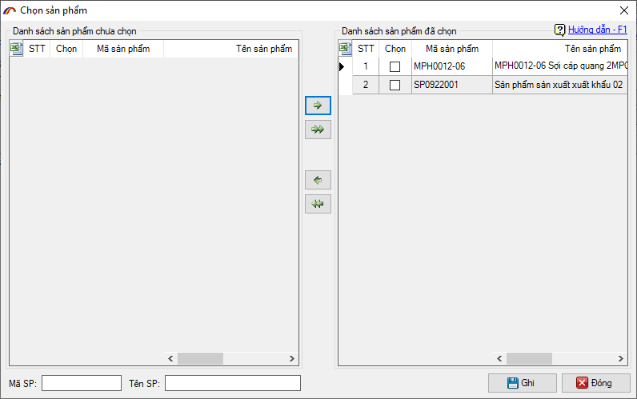
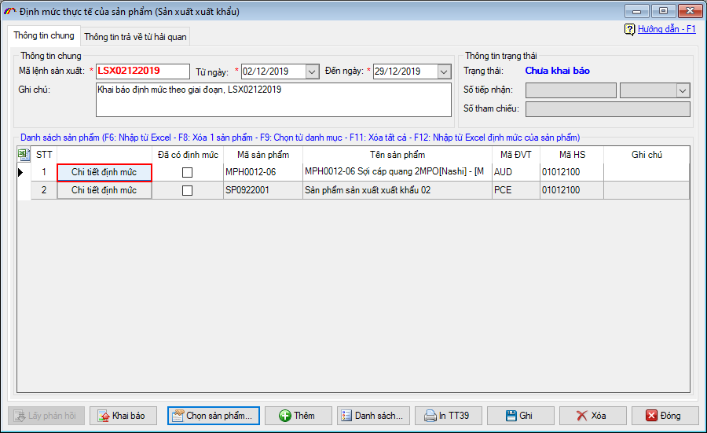
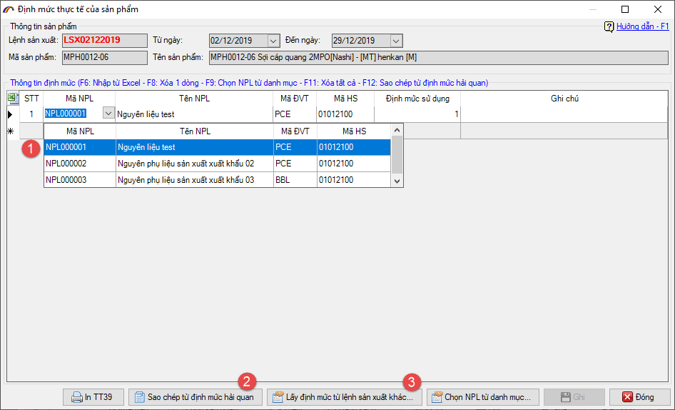
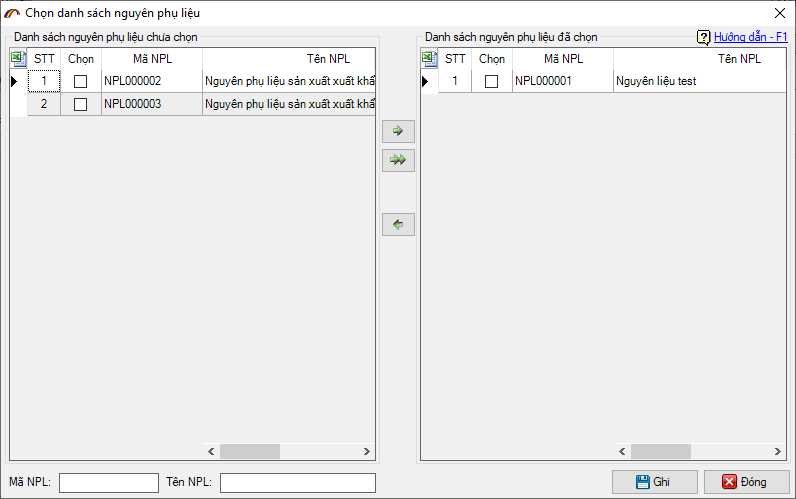
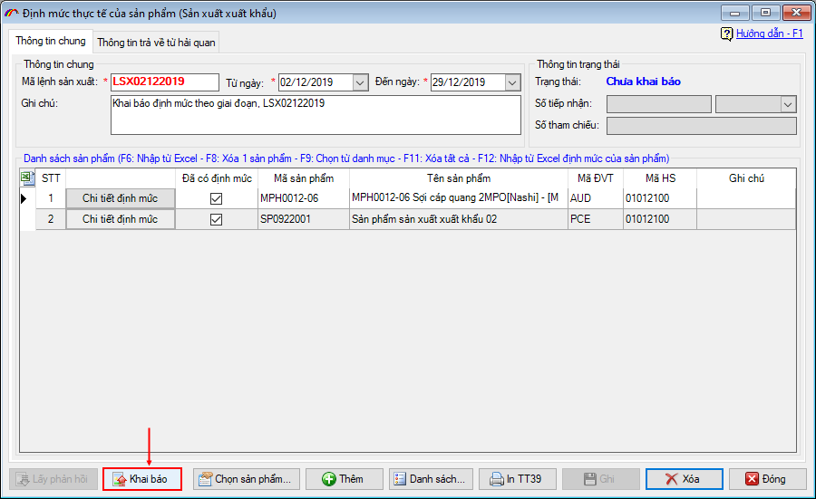
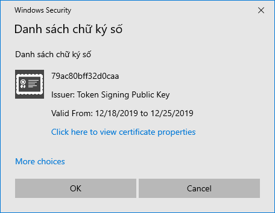
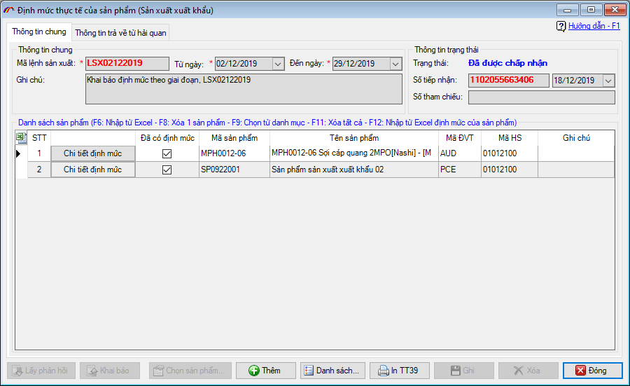

HƯỚNG DẪN KHAI BÁO ĐỊNH MỨC GIAI ĐOẠN (NĂM TÀI CHÍNH)
Thông thường mỗi mã sản phẩm chỉ được khai báo định mức thực tế một lần, nếu có thay đổi định mức thì doanh nghiệp phải đăng ký một mã sản phẩm khác cho chính sản phẩm đó để đăng ký định mức mới.
Đến nay, theo Quyết định 2270/QĐ-TCHQ ban hành ngày 09 tháng 08 năm 2018 của Tổng cục Hải quan về định dạng thông điệp dữ liệu trao đổi giữa Hải quan và doanh nghiệp Gia công, Sản xuất xuất khẩu, Chế xuất. Cho phép doanh nghiệp khai báo được nhiều lần định mức cho cùng một mã Sản phẩm dựa vào các Lệnh sản xuất khác nhau.
Để hiểu rõ hơn cách khách báo, doanh nghiệp xem hướng dẫn chi tiết phía dưới đây.
1. Các khái niệm và lưu ý:
- Mã định danh của lệnh sản xuất: Đây là mã do doanh nghiệp tự đặt và đảm bảo phải là duy nhất trong doanh nghiệp (hoặc là duy nhất không trùng nhau trong cùng một hợp đồng đối với doanh nghiệp Gia công).
- Một mã định danh của lệnh sản xuất có thể được sử dụng để khai báo nhiều định mức sản phẩm khác nhau.
- Một định mức sản phẩm và một Mã định danh của lệnh sản xuất chỉ được khai mới cùng nhau một lần duy nhất, sản phẩm muốn khai báo mới định mức thì phải thay bằng mã định danh của lệnh sản xuất khác.
2. Hướng dẫn thực hiện.
Chức năng khai báo định mức giai đoạn là như nhau đối với các loại hình Sản xuất xuất khẩu, Gia công và Chế xuất, ở hướng dẫn này chúng tôi sẽ hướng dẫn cách thực hiện đối với loại hình Sản xuất xuất khẩu, các loại hình khác các bạn thực hiện tương tự.
Để khai báo định mức giai đoạn, bạn vào menu Loại hình / Sản xuất xuất khẩu sau đó chọn mục Định mức thực tế theo giai đoạn (năm tài chính) của sản phẩm:

Tại giao diện danh sách hiện ra, bạn nhấn vào nút Thêm…:

Chức năng nhập định mức thực tế theo giai đoạn sẽ hiện ra như sau:

Bạn tiến hành nhập vào thông tin về mã lệnh sản xuất, giai đoạn thực hiện của định mức (1), sau đó nhấn nút Chọn sản phẩm… (2) để chọn các mã sản phẩm cần đăng ký định mức:

Sau khi chọn xong sản phẩm, bạn tiến hành nhập bảng định mức cho từng sản phẩm trong danh sách bằng cách nhấn vào nút Chi tiết định mức:

Giao diện nhập chi tiết định mức hiện ra như sau:

Doanh nghiệp tiến hành chọn danh sách Nguyên phụ liệu tham gia định mức bằng cách nhấn vào combo Mã nguyên phụ liệu hoặc nhấn nút Chọn NPL từ danh mục… để chọn:

Ngoài ra, bạn có thể sao chép bảng định mức đã có từ các nguồn sau:
- Sao chép từ định mức Hải quan (2): Cách này cho phép bạn copy bảng định mức của một sản phẩm đã được lập theo cách làm định mức thông thường.
- Sao chép định mức từ lệnh sản xuất khác (3): Cách này cho pháp bạn copy bảng định mức của chính mã sản phẩm đang làm định mức, nhưng ở một lệnh sản xuất khác đã khai báo trước đó.
Sau khi hoàn tất việc nhập định mức cho danh sách sản phẩm, bạn nhấn vào nút Ghi để lưu lại thông tin. Sau đó tiến hành khai báo lên cơ quan Hải quan bằng cách nhấn nút Khai báo:

Phần mềm sẽ yêu cầu bạn chọn thiết bị chữ ký số (đã được cắm vào máy tính):

Nhấn OK và nhập mã PIN cho thiết bị chữ ký số sau đó nhấn Đăng nhập:

Khai báo thành công, bạn tiếp tục nhấn nút Lấy phản hồi đến khi nhận được số tiếp nhận trả về là hoàn tất:

Bản quyền © thuộc về Công ty TNHH Phát triển công nghệ Thái Sơn